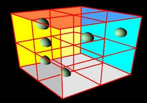

Partition
Класс: TQuadtreeSpacePartition, TOctreeSpacePartition
Чем больше вы добавляете на сцену объектов, тем медленнее протекает их обработка и
рендеринг. В таких ситуациях на отрисовку отправляется слишком много данных о вершинах, в том числе
и тех, которые и рисоваться не должны - камера их просто не видит. Что же делать? На помощь приходят
методы разбиения пространства. В частности, квадратичные и октарные деревья: Quadtree и Octree.
Рассмотрим принцип действия Octree. Игровой мир вписывается в куб, получившийся куб делится надвое по
каждой оси (X,Y,Z). Таким образом, получается, что мир разбит на восемь кубов (отсюда и название Octree –
восьмеричное дерево). Далее эти восемь кубов делятся еще на восемь, те еще на восемь и так далее.
Самый большой куб - исходный - называется корнем (root). Все кубы дерева,
в том числе и корень – это узлы (node). Узлы, находящиеся в самом низу дерева и хранящие объекты - листья (leaf).
Когда сцена разбита на некоторе количество узлов, и в каждом листе хранятся списки принадлежащих ему
объектов, мы, используя пирамиду видимости (frustum), определяем из всех листов те, которые видны камере. А определив их,
рисуем только те объекты, которые находятся в кубах этих листьев.

Квадратичное дерево (Quadtree) устроено аналогично, только мир делится не на кубы, а на квадраты.
Quadtree больше подходит для разбиения плоских пространств, в которых перемещение камеры ограничено
преимущественно некоторой плоскостью: примером может служить автосимулятор.
Деревья могут применяться не только для отбора видимости, но и для оптимизации проверки столкновений.
Например, вы можете определять листы, находящиеся внутри некоего ограничивающего параллелепипеда (AABB) или
сферы (BSphere).
OctreeCreate
real = OctreeCreate( maxdepth,leafthreshold,growgravy,culling as real );
Создает октарное дерево и возвращает его id.
maxdepth -
leafthreshold -
growgravy -
culling - cmFineCulling=0 или cmGrossCulling=1.
QuadtreeCreate
real = QuadtreeCreate( maxdepth,leafthreshold,growgravy,culling as real );
Создает квадратичное дерево и возвращает его id.
maxdepth -
leafthreshold -
growgravy -
culling - cmFineCulling=0 или cmGrossCulling=1.
PartitionDestroy
real = PartitionDestroy( tree as real );
Уничтожает дерево.
tree - id дерева.
PartitionAddLeaf
real = PartitionAddLeaf( tree,object as real );
Добавляет к дереву объект, который должен участвовать в разбиении.
tree - id дерева
object - id объекта.
PartitionLeafChanged
real = PartitionLeafChanged( object as real );
Сведения отсутствуют.
object - id объекта.
PartitionQueryFrustrum
real = PartitionQueryFrustrum( tree,viewer as real );
Запрашивает у дерева все листья, которые видны камере заданного вида.
tree - id дерева
viewer - id вида.
PartitionQueryLeaf
real = PartitionQueryLeaf( tree,object as real );
Сведения отсутствуют.
tree - id дерева
object - id объекта.
PartitionQueryAABB
real = PartitionQueryAABB( tree,object as real );
Запрашивает у дерева все листья, находящиеся внутри ограничивающего параллелепипеда заданного объекта.
tree - id дерева
object - id объекта.
PartitionQueryBSphere
real = PartitionQueryBSphere( tree,object as real );
Запрашивает у дерева все листья, находящиеся внутри ограничивающей сферы заданного объекта.
tree - id дерева
object - id объекта.
PartitionGetNodeTests
real = PartitionGetNodeTests( tree as real );
Сведения отсутствуют.
tree - id дерева.
PartitionGetNodeCount
real = PartitionGetNodeCount( tree as real );
Возвращает общее количество узлов дерева.
tree - id дерева.
PartitionGetResult
real = PartitionGetResult( tree,index as real );
Возвращает id объекта, принадлежащего заданному листу результата последнего запроса.
tree - id дерева
index - номер листа.
PartitionGetResultCount
real = PartitionGetResultCount( tree as real );
Возвращает количество листьев в результате последнего запроса.
tree - id дерева
index - номер листа.
PartitionResultShow
real = PartitionResultShow( tree as real );
Показывает объекты, принадлежащие листьям результата последнего запроса.
tree - id дерева.
PartitionResultHide
real = PartitionResultHide( tree as real );
Скрывает объекты, принадлежащие листьям результата последнего запроса.
tree - id дерева.